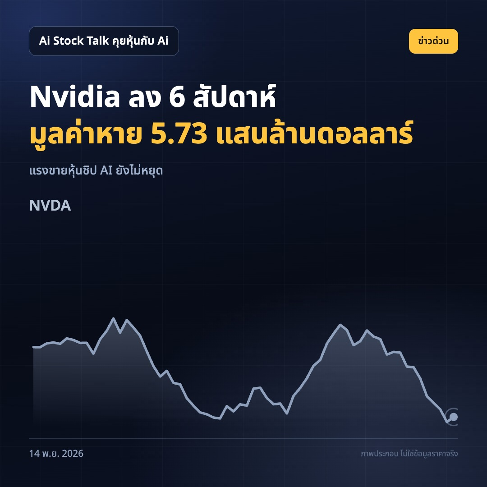
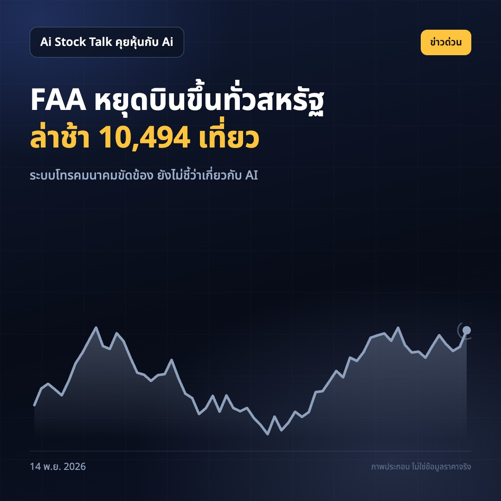
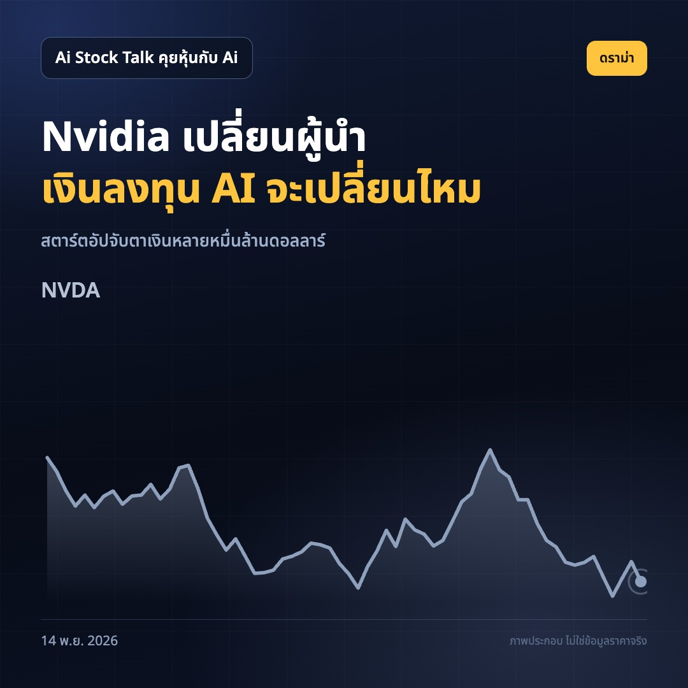
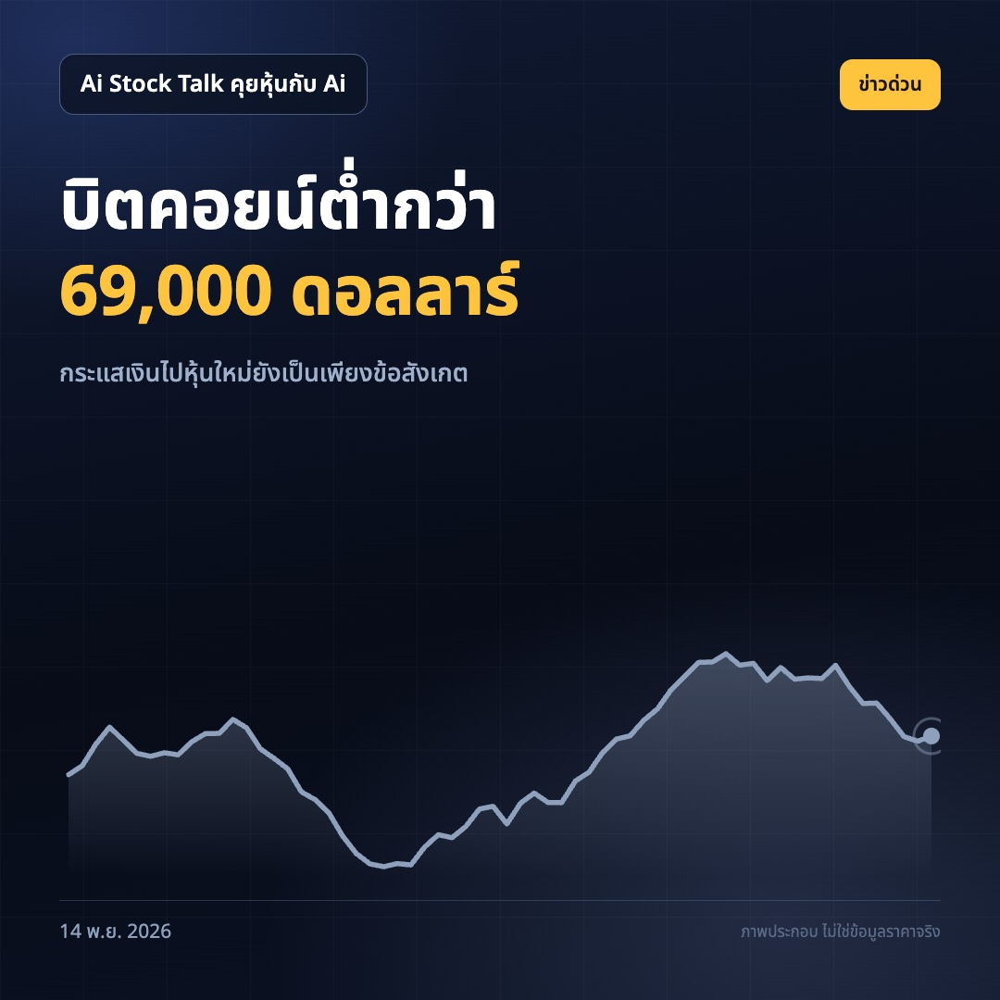
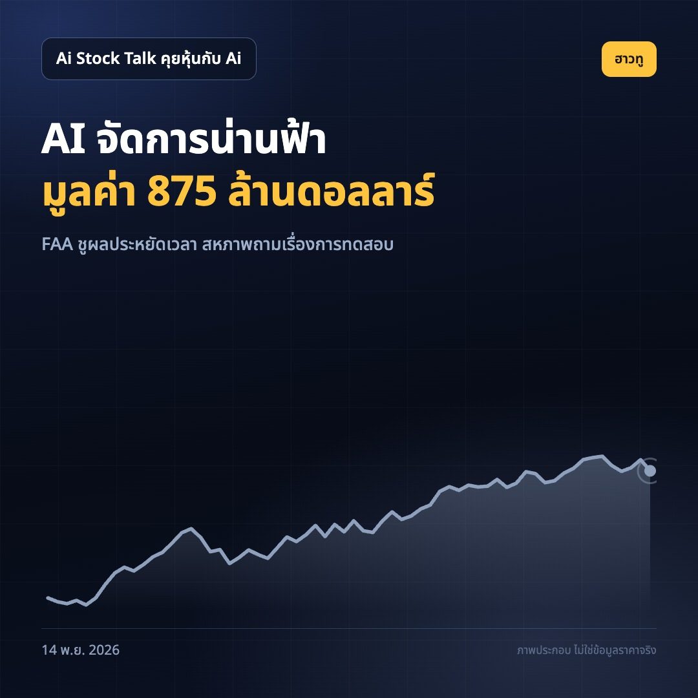
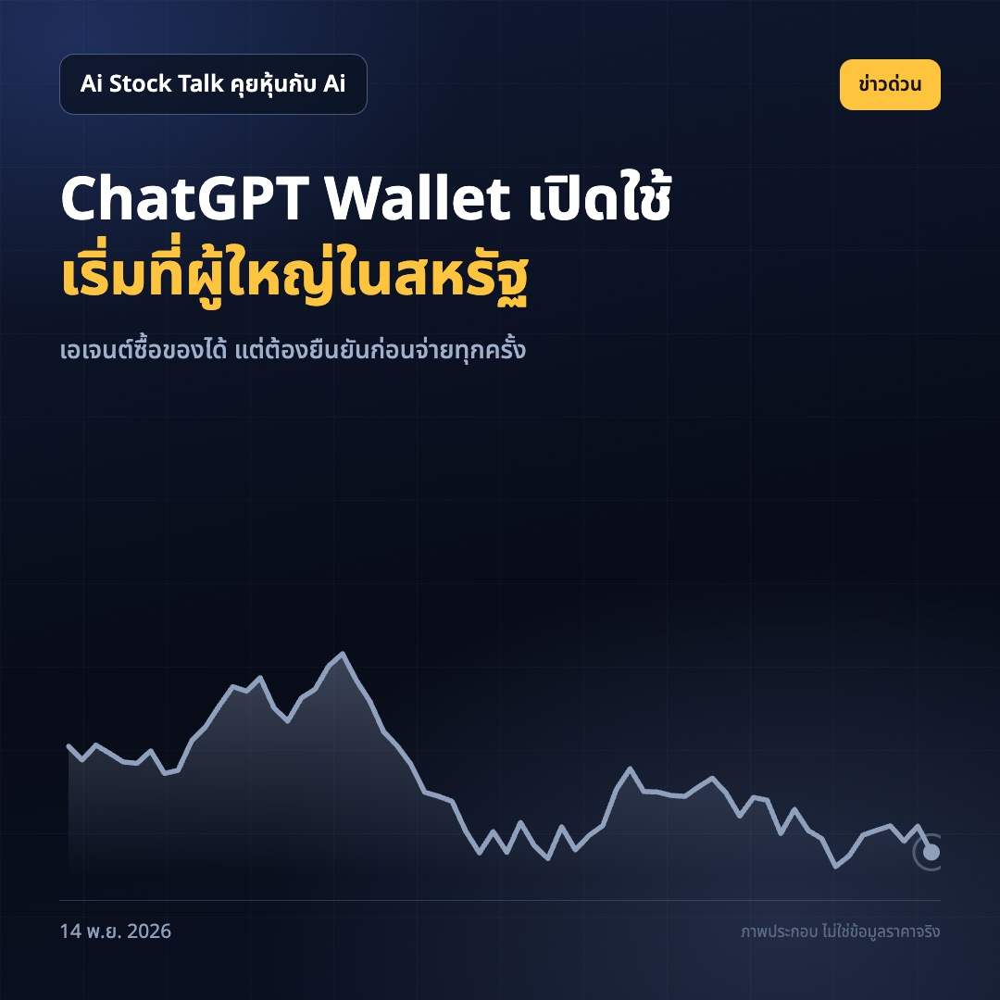

1. หุ้น Nvidia ลงต่อเนื่อง 6 สัปดาห์

Nvidia ลงต่อ 6 สัปดาห์ มูลค่าตลาดหาย 5.73 แสนล้านดอลลาร์ในสัปดาห์เดียว นี่เป็นการปรับลงรายสัปดาห์ต่อเนื่องยาวนานที่สุดของหุ้นนับตั้งแต่ปี 2012 ขณะที่ข่าวเจนเซน หวง ลาออกจากตำแหน่งซีอีโอเพิ่มความกังวลให้ตลาด ตัวเลขมูลค่าที่หายไปสะท้อนแรงขายหุ้นผู้นำด้านชิป AI แต่ข้อมูลในข่าวยังไม่บอกว่าราคาหุ้นจะหยุดลงตรงไหน ทำไมต้องสน: คนไทยที่ถือหุ้นสหรัฐหรือกองทุนที่มี Nvidia ควรดูว่าสัดส่วนการลงทุนยังตรงกับความเสี่ยงที่รับไหวหรือไม่ ถ้าคุณถือ Nvidia อยู่ ข่าวไหนกระทบการตัดสินใจมากกว่า ระยะเวลาที่หุ้นลงต่อเนื่องหรือการเปลี่ยนซีอีโอ? ที่มา: https://www.marketwatch.com/story/nvidias-stock-is-on-a-losing-streak-not-seen-in-14-years-what-comes-next-a07e801e?mod=mw_rss_topstories https://www.cnbc.com/2026/11/13/nvidia-stock-jensen-affair-ai.html
หุ้นสหรัฐ #เอ็นวิเดีย #หุ้นเอไอ
2. สหรัฐสั่งหยุดเที่ยวบินทั่วประเทศหลังระบบสื่อสารขัดข้อง

เที่ยวบินสหรัฐล่าช้า 10,494 เที่ยว หลัง FAA สั่งหยุดบินขึ้น FAA สั่งระงับการบินขึ้นทั่วประเทศด้วยเหตุระบบโทรคมนาคมขัดข้อง ส่วนเครื่องบินที่อยู่กลางอากาศยังลงจอดได้ ตามข้อมูลที่รายงานในช่วงเกิดเหตุ มีเที่ยวบินถูกยกเลิกอีก 3,396 เที่ยว หน่วยงานสหรัฐระบุว่าไม่มีข้อบ่งชี้ว่าเป็นการโจมตี ขณะนี้ข้อมูลที่ให้มายังไม่ชี้ว่าระบบ AI จัดการจราจรทางอากาศเป็นต้นเหตุ ทำไมต้องสน: เหตุนี้แสดงให้เห็นว่าปัญหาระบบสื่อสารเพียงจุดเดียวอาจกระทบการเดินทางวงกว้าง ผู้ถือหุ้นธุรกิจการบินและท่องเที่ยวควรติดตามผลต่อเที่ยวบิน คุณคิดว่าหน่วยงานควรเปิดเผยรายละเอียดความขัดข้องอะไรเป็นอันดับแรก? ที่มา: https://www.theverge.com/news/1033489/faa-ground-stop https://arstechnica.com/tech-policy/2026/11/faa-orders-third-nationwide-ground-stop-in-its-history/
ข่าวเทคโนโลยี #การบิน #หุ้นสหรัฐ
3. การลาออกของเจนเซน หวง เขย่าการลงทุนในสตาร์ตอัป AI

Nvidia เคยลงเงินหลายหมื่นล้านดอลลาร์ในสตาร์ตอัป AI หลังเจนเซน หวง ลาออกจากตำแหน่งซีอีโอ ผู้ก่อตั้งสตาร์ตอัปและนักลงทุนร่วมทุนเริ่มเตรียมรับความเป็นไปได้ว่าเงินลงทุนจาก Nvidia อาจลดลง รายงานระบุว่าในช่วงที่หวงบริหาร บริษัททุ่มเงินหลายหมื่นล้านดอลลาร์ให้ธุรกิจ AI แต่ยังไม่มีตัวเลขยืนยันว่าแผนลงทุนหลังเปลี่ยนผู้นำจะลดลงเท่าใด ทำไมต้องสน: หาก Nvidia เปลี่ยนวิธีลงทุน บริษัท AI ที่พึ่งเงินทุนก้อนใหญ่ย่อมต้องประเมินแผนใหม่ และผู้ถือหุ้น Nvidia ควรจับตาว่าผู้บริหารชุดต่อไปจะใช้เงินอย่างไร คุณอยากเห็น Nvidia ทุ่มเงินให้สตาร์ตอัปต่อ หรือให้ความสำคัญกับธุรกิจชิปของตัวเองมากกว่า? ที่มา: https://techcrunch.com/2026/11/13/jensen-huangs-departure-blasts-big-hole-in-ai-startup-funding-vcs-and-founders-say/
เอ็นวิเดีย #สตาร์ตอัปเอไอ #หุ้นเทคโนโลยี
4. บิตคอยน์ต่ำกว่า 69,000 ดอลลาร์ ท่ามกลางคำถามเรื่องเงินไหลไปหุ้นใหม่

บิตคอยน์ต่ำกว่า 69,000 ดอลลาร์ รายงานตั้งข้อสังเกตว่า นักลงทุนบางส่วนอาจขายสินทรัพย์คริปโตเพื่อเตรียมเงินสำหรับการเสนอขายหุ้นของ Anthropic ซึ่งยังเป็นเพียงความเป็นไปได้ ข้อมูลที่ให้มาไม่ได้ยืนยันว่ามีการขายบิตคอยน์เพื่อซื้อหุ้นดังกล่าวจริง และไม่ได้ระบุว่าการเสนอขายหุ้นจะเกิดขึ้นเมื่อใด ทำไมต้องสน: คนไทยที่ถือทั้งคริปโตและหุ้นเทคควรแยกการเคลื่อนไหวของราคาออกจากคำอธิบายที่ยังไม่มีหลักฐานรองรับ ก่อนปรับสัดส่วนในพอร์ต ถ้าต้องเตรียมเงินสำหรับโอกาสลงทุนใหม่ คุณจะลดสินทรัพย์เดิมในพอร์ตส่วนไหนก่อน? ที่มา: https://www.marketwatch.com/story/bitcoin-could-fall-even-further-if-investors-cash-out-to-buy-into-the-anthropic-ipo-5a14f46a?mod=mw_rss_topstories
บิตคอยน์ #คริปโต #พอร์ตลงทุน
5. ระบบ AI จัดการน่านฟ้าสหรัฐขยายใช้งาน ท่ามกลางคำถามเรื่องการทดสอบ

FAA ขยายระบบ AI มูลค่า 875 ล้านดอลลาร์ทั่วน่านฟ้าสหรัฐ ระบบ SMART ใช้ให้คำแนะนำผู้ควบคุมจราจรทางอากาศเพื่อช่วยจัดการความหนาแน่นของเที่ยวบิน FAA ระบุว่าระบบเคยช่วยเปลี่ยนเส้นทางบิน 180 เที่ยว หลังเริ่มใช้ในน่านฟ้าแถบกรุงวอชิงตัน FAA อ้างว่าประหยัดเวลาเฉลี่ย 10 นาทีต่อเที่ยวและเชื้อเพลิงเกือบ 80 แกลลอนต่อเที่ยว ขณะที่สหภาพผู้ควบคุมจราจรทางอากาศบอกว่าไม่ได้ร่วมออกแบบหรือทดสอบระบบ ทำไมต้องสน: ตัวเลขประสิทธิภาพทำให้เห็นโอกาสของ AI ในโครงสร้างพื้นฐาน แต่การนำไปใช้ทั่วประเทศก็ควรมีคำตอบชัดเจนเรื่องการทดสอบ คุณอยากเห็นหลักฐานแบบไหนก่อนให้ระบบ AI ช่วยงานที่เกี่ยวกับความปลอดภัยการบิน? ที่มา: https://arstechnica.com/features/2026/11/faa-expands-ai-advice-to-manage-air-traffic-congestion-across-entire-us-airspace/
เอไอ #การบิน #เทคโนโลยี

ก่อนชำระเงินแต่ละครั้ง เอเจนต์ต้องกลับมาขอความเห็นชอบจากผู้ใช้ และการซื้อทุกครั้งต้องผ่านการตรวจสอบตัวตนด้วยข้อมูลชีวมิติ เช่น ใบหน้าหรือลายนิ้วมือ ทำไมต้องสน: AI กำลังขยับจากช่วยค้นข้อมูลไปสู่ขั้นตอนจ่ายเงิน คนที่ติดตามหุ้นเทคควรดูว่ารูปแบบนี้จะเปลี่ยนวิธีซื้อสินค้าออนไลน์หรือไม่ ถ้าใช้ได้ในไทย คุณจะให้เอเจนต์ช่วยซื้อสินค้าประเภทไหนเป็นอย่างแรก?